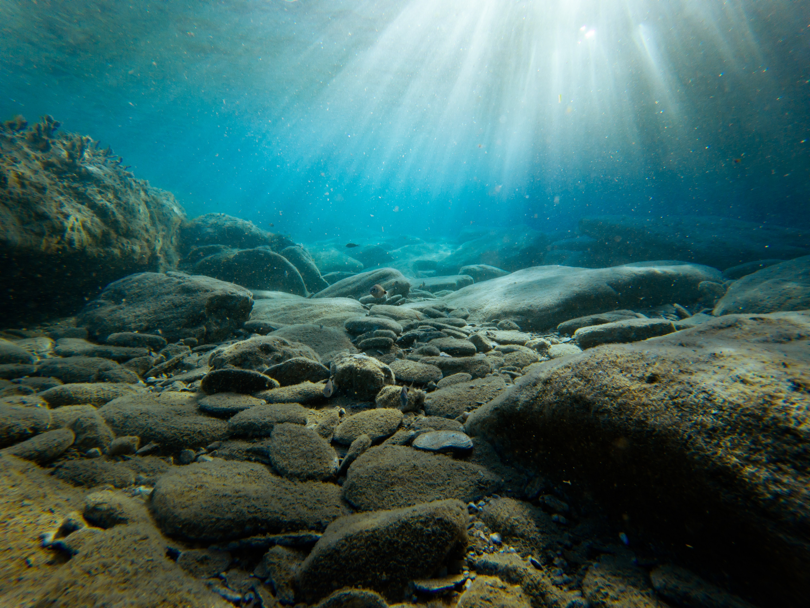

Located in the Mariana Archipelago east of the Philippines, the Marianas Trench Marine National Monument protects approximately 95,216 square miles of submerged lands and waters. This unique place on Earth includes three units:
The Island Units
the waters and submerged lands of the three northernmost Mariana Islands.
The Volcanic Unit
the submerged lands within 1 nautical mile of 21 designated volcanic sites.
The Trench Unit
the submerged lands extending from the northern limit of the Exclusive Economic Zone of the United States in the Commonwealth of the Northern Mariana Islands (CNMI) to the southern limit of the Exclusive Economic Zone of the United States in the Territory of Guam.
No waters are included in the Volcanic and Trench Units, and CNMI maintains all authority for
managing the
three islands within the Islands Unit (Farallon de Pajaros or Uracas, Maug, and Asuncion) above the
mean low
water line. Presidential Proclamation 8335 established the monument in January 2009 and assigned
management
responsibility to the Secretary of the Interior, in consultation with the Secretary of Commerce. The
Interior Secretary placed the Mariana Trench and Volcanic Units within the National Wildlife Refuge
System,
and delegated his management responsibility to the Fish and Wildlife Service.
The Secretary of Commerce, through the National Oceanic and Atmospheric Administration (NOAA), has
primary
management responsibility for fishery related activities in the waters of the Islands Unit.
The Secretaries have established a Mariana Trench Monument Advisory Council to provide advice and
recommendations on the development of management plans and management of the monument. The Council
currently
includes three officials of the CNMI government and one representative each from the Department of
Defense
and the U.S. Coast Guard.